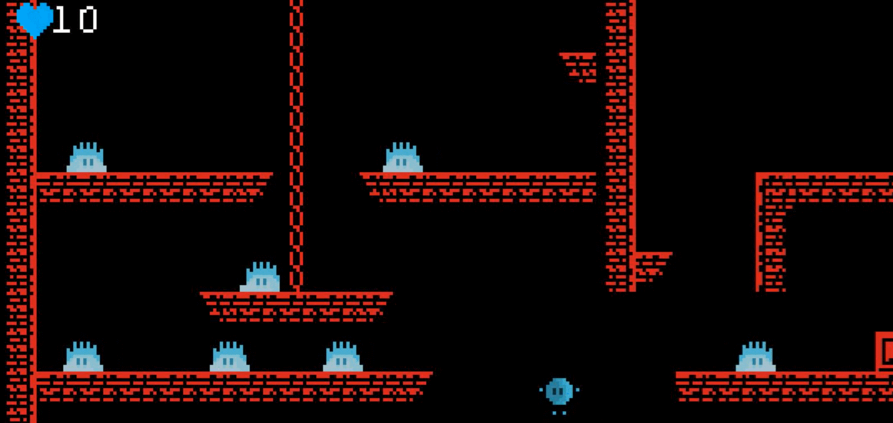
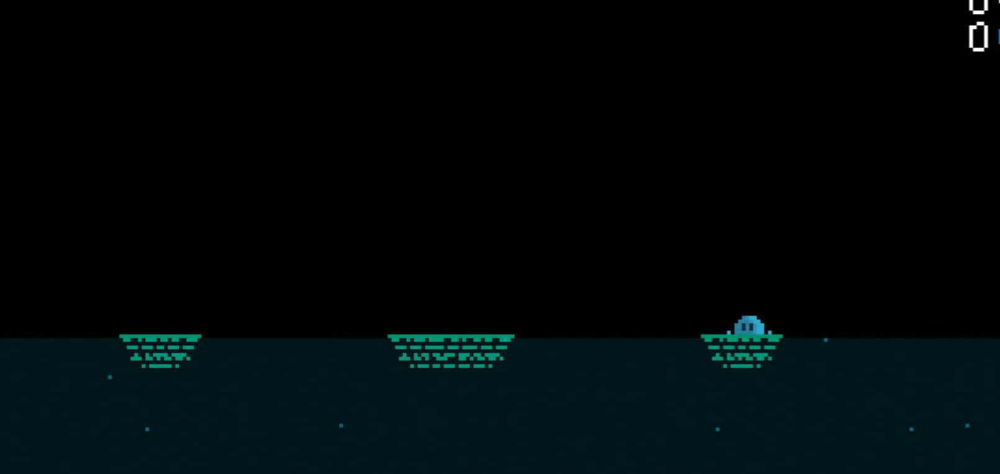
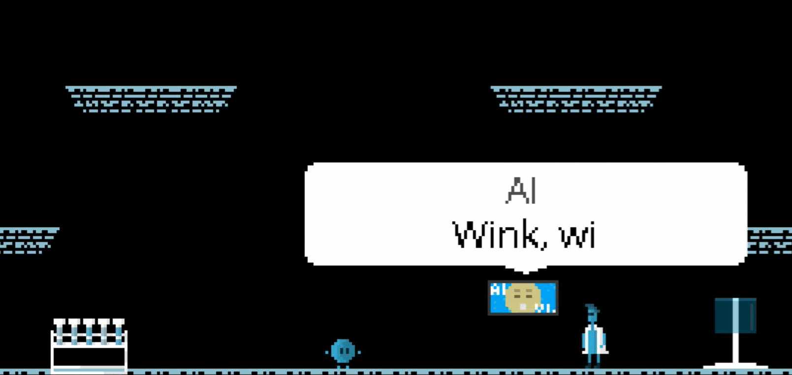

Dr. Atominus
A platformer adventure with metroidvania elements and a fun sci-fi story.
Available on these stores:
4 areas to explore

5 boss fights

Enjoy a fun sci-fi story with 3 different endings

Get it now from Steam, itch.io or for Xbox One.